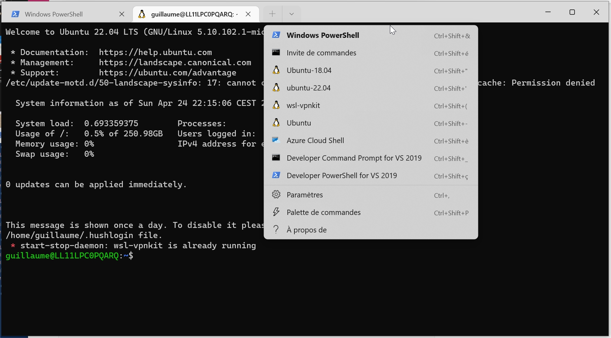
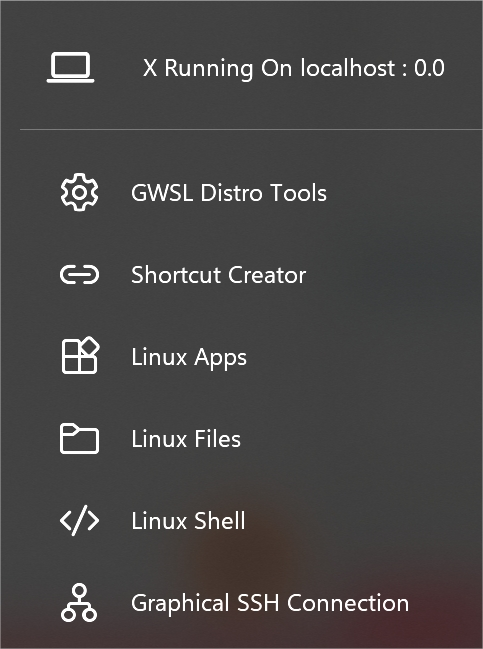

source of inspiration
Installation
uninstall image (if needed)
# wsl --unregister <distroName>
wsl --unregister ubuntu-22.04download images
From cloud images ubuntu (cloud-images > jammy > current), now there are wsl images:

I just have to download the last jammy (22.04) image jammy-server-cloudimg-amd64-wsl.rootfs.tar.gz
install and setup from powershell
I have downloaded this ubuntu image to D:\wsl\ubuntu-22.04\download
(base) guillaume@LL11LPC0PQARQ:/mnt/d/wsl$ tree
.
├── Ubuntu-20.04
│ └── ext4.vhdx
├── Ubuntu-22.04
│ ├── download
│ │ └── jammy-server-cloudimg-amd64-wsl.rootfs.tar.gz
│ └── instanceand my ubuntu-22.04 instance will stand in D:\wsl\ubuntu-22.04\instance
Install with this command from powershell
# wsl --import <distroname> <location of instance> <location of download>
wsl --import ubuntu-22.04 D:\wsl\ubuntu-22.04\instance D:\wsl\ubuntu-22.04\download\jammy-server-cloudimg-amd64-wsl.rootfs.tar.gzIt takes 3-4 minutes to install. and should be visible in your wsl instances.
wsl --list --all -v
NAME STATE VERSION
ubuntu-22.04 Stopped 2then to run it
# wsl -d <distroname>
wsl -d ubuntu-22.04or
use Windows Terminal as a launcher
Windows Terminal is a smart way to group all terminals (powershell, and all your wsl instances)

It can be installed even with limited windows store access by clicking install in Installer le Terminal Windows et commencer à le configurer
Automatically all wsl instances appear in Settings.
Automatic setup
copy these 2 scripts in /root/ (given they are in D:\wsl\ubuntu-22.04\download)
cp /mnt/d/wsl/Ubuntu-22.04/download/setup_wsl_* .setup_wsl_root.sh download
#!/bin/bash
echo "0. get username: "
read user_name
. /etc/lsb-release
echo Configuration for user [$user_name]
echo of distribution $DISTRIB_CODENAME
echo
echo "1. create user and add in sudo"
#adduser --disabled-password --gecos "" $user_name
adduser --gecos "" $user_name
usermod -aG sudo $user_name
echo
echo "2. create wsl.conf file"
rm -rf /etc/wsl.conf
tee /etc/wsl.conf << EOF
# Set the user when launching a distribution with WSL.
[user]
default=$user_name
EOF
echo
echo "3. prepare setup by user"
cp setup_wsl_user.sh /home/$user_name
chown $user_name:users /home/$user_name/setup_wsl_user.sh
chmod 750 /home/$user_name/setup_wsl_user.sh
tee -a /home/$user_name/.bashrc << EOF
if [ ! -f ~/".wsl_configured" ]; then
~/setup_wsl_user.sh
touch ~/.wsl_configured
fi
EOF
echo
echo "end of configuration for root"
echo "stop wsl instance by running 'wsl -t <distro-name>' from powershell"
echo "and start from Windows Terminal"setup_wsl_user.sh download
#!/bin/bash
echo "1. setup wsl-vpnkit"
if grep -Fxq "wsl-vpnkit" ~/.profile
then
# code if found
echo " wsl-vpnkit already setup"
else
# code if not found
echo 'wsl.exe -d wsl-vpnkit service wsl-vpnkit start' >> ~/.profile
fi
wsl.exe -d wsl-vpnkit service wsl-vpnkit start
source ./.bashrc
echo
echo "2. create ssh key to copy to gitlab"
. /etc/lsb-release
if [ ! -e ".ssh/id_rsa.pub" ]; then
ssh-keygen -t rsa -b 4096 -C "WSL2 ubuntu $DISTRIB_RELEASE"
cat .ssh/id_rsa.pub
echo "copy this content to gitlab > preferences > SSH Keys"
read -p "Press any key to resume ..."
fi
echo
echo "3. update certificates"
if [ ! -n "$(grep "^gitlab.michelin.com " ~/.ssh/known_hosts)" ]; then ssh-keyscan gitlab.michelin.com >> ~/.ssh/known_hosts 2>/dev/null; fi
git clone git@gitlab.michelin.com:devops-foundation/devops_environment.git /tmp/devops_environment
sudo cp /tmp/devops_environment/certs/* /usr/local/share/ca-certificates/
sudo update-ca-certificates
rm -rf /tmp/devops_environment
if [ $DISTRIB_RELEASE == "22.04" ]
then
echo 'bug SSL with ubuntu 22.04 - https://bugs.launchpad.net/ubuntu/+source/openssl/+bug/1963834/comments/7'
sudo tee -a /etc/ssl/openssl.cnf << EOF
[openssl_init]
ssl_conf = ssl_sect
[ssl_sect]
system_default = system_default_sect
[system_default_sect]
Options = UnsafeLegacyRenegotiation
EOF
fi
echo
echo "4. update apt sources with artifactory"
echo 'Acquire { http::User-Agent "Mozilla/5.0 (X11; Ubuntu; Linux x86_64; rv:13.37) Gecko/20100101 Firefox/31.33.7"; };' | sudo tee /etc/apt/apt.conf.d/90globalprotectconf
sudo sed -i 's,http://archive.ubuntu.com/ubuntu,https://artifactory.michelin.com/artifactory/ubuntu-archive-remote,g' /etc/apt/sources.list
sudo sed -i 's,http://security.ubuntu.com/ubuntu,https://artifactory.michelin.com/artifactory/ubuntu-archive-remote,g' /etc/apt/sources.list
sudo apt update
sudo apt upgrade -y
echoThen
chmod +x setup_wsl_root.sh
./setup_wsl_root.shAs explained stop wsl instance by running wsl --shutdown ubuntu-22.04 from powershell and start from Windows Terminal
It restarts from your user and it will install:
- setup wsl-vpnkit
- create ssh key to copy to gitlab
- update certificates
- update apt sources with artifactory
And now we can install other parts
all the scripts are in https://github.com/castorfou/blog/tree/master/files
00 - keep config files in git
wget --no-check-certificate --content-disposition -O - https://raw.githubusercontent.com/castorfou/blog/master/files/setup_wsl_00_config_files_in_git.sh | bash
source .bashrc01 - automount secured vbox
wget --no-check-certificate --content-disposition -O - https://raw.githubusercontent.com/castorfou/blog/master/files/setup_wsl_01_automount_secured_vbox.sh | bash02 - python with conda and configure base environment (jupyterlab, mamba)
wget --no-check-certificate --content-disposition -O - https://raw.githubusercontent.com/castorfou/blog/master/files/setup_wsl_02_install_python_conda_part1.sh | bash
cd
source .bashrc
wget --no-check-certificate --content-disposition -O - https://raw.githubusercontent.com/castorfou/blog/master/files/setup_wsl_02_install_python_conda_part2.sh | bash
source .bashrc
wget --no-check-certificate --content-disposition -O - https://raw.githubusercontent.com/castorfou/blog/master/files/setup_wsl_02_install_python_conda_part3.sh | bash
source .bashrc03 - bat cat
wget --no-check-certificate --content-disposition -O - https://raw.githubusercontent.com/castorfou/blog/master/files/setup_wsl_03_install_batcat.sh | bash
source .bashrcTo use batcat but not display line numbers, just use -p option cat .bashrc -p
04 - git access
ln -s /mnt/d/git/ ~/05 - X access with GWSL
if you have access to Windows Store, it is available.
Or alternate download are possible.

06 - git credential manager
wget --no-check-certificate --content-disposition -O - https://raw.githubusercontent.com/castorfou/blog/master/files/setup_wsl_06_git_credential_manager.sh | bash07 - install wslu
wget --no-check-certificate --content-disposition -O - https://raw.githubusercontent.com/castorfou/blog/master/files/setup_wsl_07_wslu.sh | bashSome examples:
$ wslfetch
.-/+oossssoo+/-. Windows Subsystem for Linux (WSL2)
`:+ssssssssssssssssss+:` guillaume@LL11LPC0PQARQ
-+ssssssssssssssssssyyssss+- Build: 19044
.ossssssssssssssssssdMMMNysssso. Branch: vb_release
/ssssssssssshdmmNNmmyNMMMMhssssss/ Release: Ubuntu 22.04 LTS
+ssssssssshmydMMMMMMMNddddyssssssss+ Kernel: Linux 5.10.102.1-microsoft-standard-WSL2
/sssssssshNMMMyhhyyyyhmNMMMNhssssssss/ Uptime: 0d 3h 44m
.ssssssssdMMMNhsssssssssshNMMMdssssssss.
+sssshhhyNMMNyssssssssssssyNMMMysssssss+
ossyNMMMNyMMhsssssssssssssshmmmhssssssso
ossyNMMMNyMMhsssssssssssssshmmmhssssssso
+sssshhhyNMMNyssssssssssssyNMMMysssssss+
.ssssssssdMMMNhsssssssssshNMMMdssssssss.
/sssssssshNMMMyhhyyyyhdNMMMNhssssssss/
+sssssssssdmydMMMMMMMMddddyssssssss+
/ssssssssssshdmNNNNmyNMMMMhssssss/
.ossssssssssssssssssdMMMNysssso.
-+sssssssssssssssssyyyssss+-
`:+ssssssssssssssssss+:`
.-/+oossssoo+/-.
$ wslpath -u "C:\Program Files\Typora\Typora.exe"
/mnt/c/Program Files/Typora/Typora.exe08 - configure pip
wget --no-check-certificate --content-disposition -O - https://raw.githubusercontent.com/castorfou/blog/master/files/setup_wsl_08_pip.sh | bash09 - install vscode
code .(given Visual Studio Code is installed on the Windows side (not in WSL))
(and if needed install Remote development)
10 - docker
wget --no-check-certificate --content-disposition -O - https://raw.githubusercontent.com/castorfou/blog/master/files/setup_wsl_10_docker.sh | bashwhen relogging, docker service will be added to test docker
docker ps
docker run docker.artifactory.michelin.com/hello-worldManual setup (skip if to follow automatic setup)
basic setup
With this way to install, you don’t have any user, you don’t have any launcher within Windows.
Create a user and add it to sudo:
# adduser <yourusername>
# usermod -aG sudo <yourusername>
adduser guillaume
usermod -aG sudo guillaumeand I can switch to this user simply with
# su <yourusername>
su guillaumelaunch distro with yourusername - update wsl.conf
Manually you can now start your distro with your username from powershell
# wsl -d <distroname> -u <yourusername>
wsl -d ubuntu-22.04 -u guillaumeOr from another wsl (huge avantage to run in linux terminal instead of powershell)
wsl.exe -d ubuntu-22.04 -u guillaumebut you can better keep this username setting by updating wsl.conf
# /etc/wsl.conf
# Set the user when launching a distribution with WSL.
[user]
default=YourUserNameIt is now setup. You can now shutdown this instance from powershell.
# wsl --shutdown <distroname>
wsl --shutdown ubuntu-22.04and when starting wsl -d ubuntu-22.04, you reach your username.
wsl-vpnkit
As wsl-vpnkit is already installed, I just have to
echo 'wsl.exe -d wsl-vpnkit service wsl-vpnkit start' >> ~/.profile
source .bashrcgitlab
ssh-keygen -t rsa -b 4096 -C "WSL2 ubuntu 22.04"and copy id_rsa.pub into gitlab > preferences > SSH Keys
corporate CA certificates
git clone git@gitlab.michelin.com:devops-foundation/devops_environment.git /tmp/devops_environment
sudo cp /tmp/devops_environment/certs/* /usr/local/share/ca-certificates/
sudo update-ca-certificates
rm -rf /tmp/devops_environmentapt sources
had to replace focal (20.04) to jammy (22.04)
echo 'Acquire { http::User-Agent "Mozilla/5.0 (X11; Ubuntu; Linux x86_64; rv:13.37) Gecko/20100101 Firefox/31.33.7"; };' | sudo tee /etc/apt/apt.conf.d/90globalprotectconf
sudo sed -i 's@^\(deb \)http://archive.ubuntu.com/ubuntu/\( jammy\(-updates\)\?.*\)$@\1https://artifactory.michelin.com/artifactory/ubuntu-archive-remote\2\n# &@' /etc/apt/sources.list
sudo sed -i 's@^\(deb \)http://security.ubuntu.com/ubuntu/\( jammy\(-updates\)\?.*\)$@\1https://artifactory.michelin.com/artifactory/ubuntu-security-remote\2\n# &@' /etc/apt/sources.listcheck everything is ok
- This command must return google ip:
host google.fr- This command must return artifactory ip:
host artifactory.michelin.com- You are able to update your distribution without error:
sudo apt update
sudo apt upgrade -ySetup config dotfiles with whole filesystem (/)
as detailed in keep dotfiles in git
but to manage the whole filesystem.
init local repo
sudo mkdir -p /.cfg
sudo chown $USER:users /.cfg
git init --bare /.cfg
alias config='/usr/bin/git --git-dir=/.cfg/ --work-tree=/'
config config --local status.showUntrackedFiles no
echo "alias config='/usr/bin/git --git-dir=/.cfg/ --work-tree=/'" >> $HOME/.bash_aliases
cd
source .bashrcgit default identity (if needed)
config config --global user.email "guillaume.ramelet@michelin.com"
config config --global user.name "guillaume"setup branch and push to central repo
config remote add origin git@gitlab.michelin.com:janus/dotfiles.git
config fetch
cd
config add .bashrc
config commit -m 'init with .bashrc'
config branch GR_WSL2_ubuntu22.04
config checkout GR_WSL2_ubuntu22.04
config push --set-upstream origin GR_WSL2_ubuntu22.04